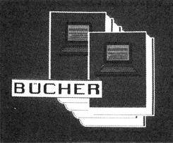
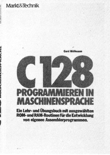
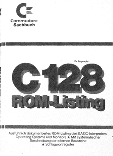
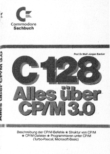

Bücher

C 128 PROGRAMMIEREN IN MASCHINENSPRACHE

Dieses Werk von Gerd Möllmann stellt kein Lehrbuch für 6502/6510 Assembler-Programmierung dar, sondern ist vielmehr eine Weiterführung und vertiefende Literatur, die dem 6502-Vertrauten den Weg zur effektiven Assembler-Programmierung mit dem C 128 erleichtern soll. Das Buch ist streng in sieben Kapitel gegliedert, die keinen Lehrbuchcharakter aufweisen, sondern als gutes Nachschlagewerk zu allen Belangen der Programmierung in Maschinensprache aufdem C 128ihren Platz in der eigenen Bibliothek behaupten.
Im ersten Kapitel werden die neuen Bausteine des C 128 (MMU, VDC) behandelt, aber auch die Register der vom C 64 her bekannten ICs wie VIC II, SID und CIAs kommen hier nicht zu kurz. Das zweite Kapitel beschreibt die Routinen der »Common Ärea«, also der Kernel- und Interpreter-Unterprogramme im gemeinsamen RAM-Bereich von $0000 bis $03FF. Im dritten Kapitel wird auf50 Seiten dasBetriebssystem analysiert, daran angehängt die Kernel-Vektoren. Im fünften und längsten Kapitel wird der Basic-Interpreter sorgfältig zerlegt. Das sechste Kapitelbeschäftigt sich mit den dazugehörigen Basic-Vektoren in der erweiterten Zeropage und das siebte Kapitel beschreibt deren Einsatzmöglichkeiten.
Der Autor hat mit diesem Buch ein ausführliches Nachschlage-, werk für die Assemblerprogrammierung des C 128 geschaffen, das so gut wie möglich mit Beispielprogrammen unterlegt ist und trotz der Informationsvielfalt immer noch übersichtlich bleibt.
(Jörg Sahlmann/bj)Gerd Möllmann, C128 Programmieren in Maschinensprache, Markt & Technik Verlag, 270 Seiten, ISBN 3-89090-213-8, DM 52,—
AUTOMATISCHE SPRACHEIN- UND -AUSGABE

Obwohl bereits einige durch Sprachausgabe gestützte Spiele erhältlich sind, haben viele Software-Entwickler immer noch große Probleme mit dieser Materie, da die Qualität, von einigen Ausnahmen abgesehen, oft sehr zu wünschen übrig läßt. In der nahen Zukunft wird sicherlich diese Komponente der Informatik und Elektrotechnik verstärkt ausgebaut und genutzt werden. Im Bereich der Fremdsprachen-Software dürfte es nur noch eine Frage von wenigen Jahren sein, bis entsprechend hochwertige Programme auf den Markt kommen.
Die Bundesanstalt für Arbeitsschutz hat erkannt, daß dem Thema der Kommunikation zwischen Menschen und Maschinen bereits jetzt hohe Bedeutung zukommt. Insbesondere wollen die Autoren]. Blauertund E. Schaffert Empfehlungen zu einer menschengerechten Gestaltung von derartigen Arbeitsplätzen geben.
Geradezu eine Fundgrube stellt der Band »Automatische Sprachein- und -ausgabe« für alle dar, die eine Übersicht der verwendeten Systeme und der Anwendererfahrungen suchen. Ferner werden technische und linguistische Grundlagen zur automatischen Sprachein- und -ausgabe dargelegt. Weitere Themen sind geplante Anwendungen etwa im Intercity, bei Verkehrsdurchsagen und als Notleitsysteme bei Bränden in Hochhäusern.
Das Buch ist in erster Linie interessant für Software-Entwickler, Arbeitsschutz-Beauftragte und Studenten der Kommunikationswissenschaften, spricht aber auch den an Grundlagen interessierten Leser an, der sich in dieses noch recht junge Teilgebiet der Informatik einarbeiten möchte.
(Rüdiger Werner/bj)J. Blauert/E. Schaffer, Automatische Sprachein- und -ausgabe, Schriftenreihe der Bundesanstalt für Arbeitsschutz, 219 Seiten, ISBN 3-88314-416-7, DM 28,50
C 128 ROM-LISTING

Ein unentbehrliches Arbeitsmittel für Maschinensprache-Programmierer ist das ROM-Listing. Gab es für den C 128 bislang nur eine Dokumentation von Monitor und Betriebssystem, istnun daserste vollständige ROM-Listing, das die gesamten 44KByteROM, also auch den 28 KByte langen Basic-7.0-Interpreter, umfaßt, erschienen. Das Buch »C 128 ROM-Listing« aus der Commodore-Sachbuchreihe, erklärt zunächst die komplizierte Speicherverwaltung desC 128. Dieses Kapitel istzwar nur 20 Seiten stark, aber sehr informativ.
Weiterhin werden die Videocontroller VIC und VDC, der Soundchip SID, sowie die CIAs in Kurzform behandelt und eine, im Gegensatz zum C 128-Handbuch vollständige Aufstellung der System-Adressen geboten. Leider wurden dabei die Adressen, die dem Anwender zur Verfügung stehen (also vom System nicht verwendet werden), nicht erwähnt. Den Hauptteil macht mit 375 Seiten das ROM-Listing selbst aus. Die äußere Struktur des ROM-Listings überzeugt durch Klarheit und Übersichtlichkeit, da es sich um einen' Quelltext-Ausdruck handelt und die eingesetzten Label-Adreßangabe mit einem vorangestellten »h«, also zum Beispiel »hFFD%« für $FFD2, eine schnelle Suche von Sprungzielen ermöglichen.
Fazit: Das vorliegende Buch ist "für jeden C 128-Maschinenprogrammierer ein unbedingtes »Muß«. Aufgrund des immensen Umfangs (456 Seiten), des großen Nutzens und eines guten Schlagwortregistersist der Preis von 58 Mark angemessen. Man hätte lediglich noch eine Einführung in die Arbeit mit ROM-Listings erwartet, der geübte Leser wird darauf aber sicher verzichten können.
(Florian Müller/bj)Commodore-Sachbuchreihe, Dr. Ruprecht, C128ROM-Listing, Markt & Technik Verlag, 456 Seiten, ISBN 3-89090-212X, DM 58,—
ALLES ÜBER CP/M 3.0

Das Betriebssystem CP/M 3.0 für den Commodore 128 gewinnt mehr und mehr an Beliebtheit. In der Commodore-Sachbuchreihe ist nun als neuestes Werk »C 128 Alles über CP/M« von Prof. Dr. Wolf-Jürgen Becker erschienen, das viele offene Fragen zu diesem Betriebssystem beantwortet. Auf 299 Seiten erhält der Leser in verständlicher Form Einblicke in die Möglichkeiten von CP/M. Nach einer ausführlichen Einleitung werden auf etwa 100 Seiten die Dienstprogramme erklärt, ohne die das Arbeiten mit CP/M unmöglich wäre. Das darauf folgende Kapitel beschäftigt sich mit der Installation höherer Programmiersprachen auf dem C 128. Hier werden Tips zur Benutzung und Installation von Nevada Fortran, Fortran 80, MBASIC und Turbo-Pascal gegeben. Auf den letzten 50 Seiten wird die Struktur von CP/M 3.0 auf dem Commodore 128 durchleuchtet und Einblicke in das BIOS und das Diskettenformat vermittelt. Gerade bei letzterem wird jedoch der fortgeschrittene Anwender und CP/M-Profi vergeblich nach einer detaillierten Beschreibung der Verwendung der Fremdformate (Osborne, Kaypro etc.) oder auch selbstdefinierter Formate suchen. In Anbetracht des ansonsten sehr informativen Inhaltes läßt sich dieser Umstand jedoch mit etwas Wehmut verkraften.
Fazit: »C 128 Alles über CP/M« ist eine gute Einführung in CP/M 3.0 auf dem Commodore 128 für alle diejenigen, die sich intensiver mit diesem Betriebssystem beschäftigen wollen.
(Jörg Sahlmann/bj)Prof.,Dr. Wolf-Jürgen Becker, C 128 Alles über CP/M 3.0, Markt & Technik Verlag, 299 Seiten, ISBN 3-89090-370-3, DM 52,—